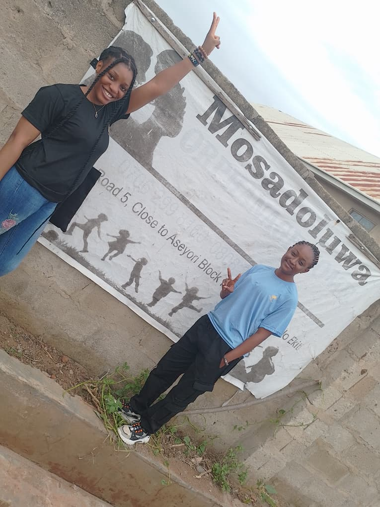

01 · School Outreach

School outreach offers an opportunity to connect with children and teenagers through encouragement and care. It is part of the initiative's broader work nurturing spiritual growth, personal development, and self-love.
Support the work